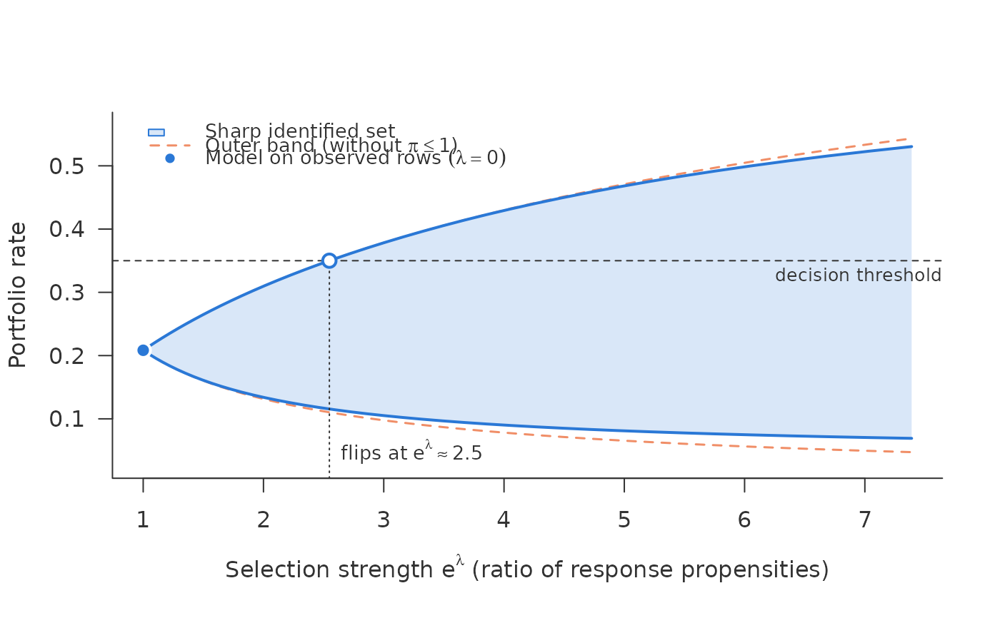

Sharp identified set for a binary outcome under a bounded ratio of response propensities
Source:R/scan.R
sharp_scan.Rdsharp_scan() answers how far the answer can move if the outcome is
missing not at random. It assumes nothing but a bound \(|b(x)| \le
\lambda\) on the log ratio of the response propensities of the two outcome
values and needs no shadow variable. It is a different tool from shadow_screen(), which asks
whether a variable is fit to serve as a shadow variable for a
point-identified model; the two rest on different assumptions.
Usage
sharp_scan(
eta_obs,
r,
lambda = seq(0, 2, length.out = 81),
aggregate = c("union", "common"),
weights = NULL,
threshold = NULL,
unobserved = FALSE
)
# S3 method for class 'sharp_scan'
as.data.frame(x, row.names = NULL, optional = FALSE, ..., lambda = NULL)Arguments
- eta_obs
Numeric vector of \(\hat\eta_{\mathrm{obs}}(x)\), in (0, 1).
- r
Numeric vector of \(\hat r(x)\), in (0, 1], same length.
- lambda
Non-negative bounds on \(|b|\). \(e^\lambda\) is the largest admissible ratio of the two response propensities (a risk ratio, not an odds ratio). Sorted and de-duplicated.
- aggregate
"union"(default) or"common", see Aggregation.- weights
Optional non-negative row weights for the portfolio mean.
- threshold
Optional decision threshold on the portfolio rate. If given, the smallest \(\lambda\) at which the sharp set (and the outer band) reaches it is computed exactly, by root finding on the closed form.
- unobserved
FALSE(default): the set is for \(\eta(x)\), the rate of all rows at \(x\), averaged over the rows given.TRUE: the rows given are unobserved rows, such as rejected applications, and the set is for their own missing outcomes; see the section on unobserved rows.- x
A
"sharp_scan"object.- row.names, optional
Ignored.
- ...
Ignored.
Value
An object of class "sharp_scan", a list with
curve: data frame withlambda,lower,upper(sharp set of the portfolio rate) andnaive_lower,naive_upper;point: the portfolio rate at \(\lambda = 0\);threshold,flip: the threshold and the \(\lambda\) at which the sharp set and the outer band first reach it (NAif not within the scanned range);binding: for"common", the row indices that bind the lower and the upper end at each \(\lambda\) (NAwhere the outer bound binds);capped: for"union", the weighted share of rows in which the cap \(\pi \le 1\) (the worst-case bound) binds at the largest \(\lambda\), for thelowerand theupperbound;held: for"union", the \(\lambda\) from which the cap binds in every row, so that this bound stays flat (NAif not within the scanned range). With \(\hat r\) near one this comes early: the lower bound \(r\eta_{\mathrm{obs}}\) binds from \(\lambda = \mathrm{logit}\,\eta_{\mathrm{obs}} - \mathrm{logit}(r\eta_{\mathrm{obs}})\), about \(-\log r\) for rare events. That flat edge is the identified set, not a defect;the inputs, so that
as.data.frame(x, lambda = )can return the pointwise sets.
as.data.frame(): the portfolio curve, or, if lambda is a single
value, the pointwise sharp set and outer band for every row.
The set
Let \(\eta(x) = P(Y=1 \mid X=x)\) be the target, \(\eta_{\mathrm{obs}}(x) = P(Y=1 \mid X=x, R=1)\) its observed-data counterpart, \(r(x) = P(R=1 \mid X=x)\) the conditional observation rate and \(b(x) = \log\{\pi(1,x)/\pi(0,x)\}\) with \(\pi(y,x) = P(R=1 \mid Y=y, X=x)\). By Bayes' rule \(\mathrm{logit}\,\eta_{\mathrm{obs}} = \mathrm{logit}\,\eta + b\).
Note the scale: \(b\) is the log of a risk ratio of response
propensities. That it shifts the logit of \(\eta\) does not make it an
odds ratio. It is not the odds-ratio parameter of Vansteelandt et al.
(2006), whose set neither depends on \(r\) nor saturates, and not the
\(\Lambda\) of the marginal sensitivity model. The assumption is a member
of the class of Manski (2016, Sect. 4.2), with the ratio taken between
outcome values rather than relative to the response rate; for a
non-binary outcome see sharp_scan_mean(). With \(\ell = \mathrm{logit}\,
\eta_{\mathrm{obs}}\) and \(\eta_t = \mathrm{expit}(\ell - t)\), the
identified set is
$$\mathcal H_\lambda(x) = \{\eta_t : |t| \le \lambda,\; c_t \in (0,1],\;
c_t e^{t} \le 1\}, \qquad c_t = \frac{r}{e^{t}\eta_t + 1 - \eta_t},$$
where \(c_t = \pi(0,x)\) and \(c_t e^t = \pi(1,x)\) are the two
propensities that reproduce the observed \(r\). Solving the two
constraints gives the closed form
$$\mathcal H_\lambda(x) = \big[\max\{\mathrm{expit}(\ell-\lambda),\;
r\eta_{\mathrm{obs}}\},\; \min\{\mathrm{expit}(\ell+\lambda),\;
r\eta_{\mathrm{obs}} + 1 - r\}\big],$$
the outer band \([\mathrm{expit}(\ell-\lambda),
\mathrm{expit}(\ell+\lambda)]\) intersected with the worst-case (Manski)
bounds of Manski (1989). Both endpoints are attained, and at \(\lambda = 0\) the set is
\(\{\eta_{\mathrm{obs}}\}\): the value any model fitted on the observed
rows asserts.
When the sharp set is narrower, and when it is not
It is never wider than the outer band. It is strictly narrower exactly where a worst-case bound cuts the band: the lower end moves when \(r > \mathrm{expit}(\ell-\lambda)/\eta_{\mathrm{obs}}\), the upper end when \(r > \{1-\mathrm{expit}(\ell+\lambda)\}/(1-\eta_{\mathrm{obs}})\). For \(r \le e^{-\lambda}\) neither moves. In reject inference the rows of interest are the rejected applications, whose observation rate is typically small, so the upper end there often coincides with the outer one. Ignoring \(r\) is never wrong, only wasteful where \(r\) is large: it gives an outer set, not a sharp one, as Dorn and Guo (2023) observe for the marginal sensitivity model.
The two inputs
The scan takes two numeric vectors, not one, evaluated at the rows for which
the set is wanted: \(\hat\eta_{\mathrm{obs}}(x)\) and \(\hat r(x)\).
r is the conditional observation rate \(P(R=1 \mid X=x)\), not the row
indicator and not the global response rate. For rejected applications
\(\hat\eta_{\mathrm{obs}}\) is an extrapolation of a model fitted on the
accepted ones; that is a property of the task, not of this package. The
package never sees the learner: glm, a scorecard, a random forest or a
model from another language serve equally. scan_inputs() extracts both
vectors from fitted models with a predict() method. The set requires
\(\hat r(x) > 0\): where acceptance was deterministic, nothing is
observed and \(\eta_{\mathrm{obs}}\) is undefined.
Estimated inputs, no inference
The set is an identified set: it is what the data would permit if the
observed-data law were known exactly. The scan plugs in
\(\hat\eta_{\mathrm{obs}}\) and \(\hat r\) as if they were the truth.
Their estimation error is not included, so the reported set is
narrower than an honest statement about the population would be. For a
confidence set use sharp_scan_ci(), which needs cross-fitted inputs for
all rows and the observed outcomes. Inference for such sets is not routine: the
endpoints are maxima and minima of estimated quantities, where the usual
bootstrap can fail; a flexible learner needs more than a naive plug-in;
and covering the set differs from covering the parameter inside it. Nor
does resampling capture misspecification of the extrapolation to rows that
are rarely observed.
If you bootstrap the set yourself, re-estimating both inputs in every draw, do not take percentile intervals of the endpoints. Each endpoint is a mean over rows of a minimum (or maximum) of the band and the worst-case bound; its plug-in is biased towards the inside of the set, and the percentile bootstrap inherits that bias. In simulations at \(\lambda = 2\), nominal 90% percentile intervals covered 72% (\(n = 1000\)) and 80% (\(n = 4000\)). The basic bootstrap, \(2\hat\theta - Q(\hat\theta^*)\), came close to nominal. The bias is largest where many rows lie near the switch between band and bound, which is where the scan looks for its flip.
Unobserved rows
For rejected applications the rate usually wanted is their own default
rate, \(E(Y \mid R = 0)\), not the mean of \(\eta(x)\) at their
characteristics: under selection on the outcome, the unobserved rows at a
given \(x\) differ from all rows at that \(x\). By Bayes' rule
\(P(Y = 1 \mid R = 0, X = x) = \{\eta(x) - r\,\eta_{\mathrm{obs}}\}/(1 -
r)\), an increasing map of \(\eta(x)\), so with unobserved = TRUE each
row's sharp set is the image of \(\mathcal H_\lambda(x)\) under it, and
its mean over the unobserved rows given estimates \(E(Y \mid R = 0)\)
(Bücker 2026). The cap \(\pi \le 1\) is then exactly the range \([0,
1]\); the outer band, which ignores the cap, is not clipped into it. At
\(\lambda = 0\) both readings give \(\eta_{\mathrm{obs}}\). Every row
needs \(r < 1\).
Aggregation
The set is pointwise. For a portfolio rate (a weighted mean of \(\eta(x)\)) there are two ways to aggregate:
"union"(default): every row at its own extreme, averaged. Under the bound \(|b(x)| \le \lambda\) alone, with the tilt free to vary with \(x\), this is the sharp set for the portfolio rate. Each row contributes only its own bounds, so no single row dominates."common": one tilt \(t\) for all rows – "had selection the strength \(t\) everywhere, the rate would be \(R(t)\)". This adds an assumption, a tilt constant in \(x\), and gives a narrower set. Then \(t\) must be admissible in every row; the admissible range is the intersection of the row ranges \([\ell - \mathrm{logit}\,U,\; \ell - \mathrm{logit}\,L]\). It always contains \(t = 0\). A single row with \(\hat r\) near one can narrow it a lot; the rows that bind are reported in$binding. Because the range is set by the most extreme rows, with estimated inputs it inherits their estimation error, at exactly the rows where \(\hat r\) is least reliable. Inspect the binding rows before reading a plateau as information. This is why it is not the default. It is a sensitivity calculation: no confidence set is offered for it, since its bound is an extremum over rows of an estimated function, set by the rows where the estimate is least reliable.
References
Bücker, M. (2026). Sharp intervals for a mean under bounded selection ratios when the response rate is known. Manuscript.
Dorn, J. and Guo, K. (2023). Sharp sensitivity analysis for inverse propensity weighting via quantile balancing. Journal of the American Statistical Association, 118(544), 2645–2657. doi:10.1080/01621459.2022.2069572
Manski, C. F. (1989). Anatomy of the selection problem. Journal of Human Resources, 24(3), 343–360. doi:10.2307/145818
Manski, C. F. (2016). Credible interval estimates for official statistics with survey nonresponse. Journal of Econometrics, 191(2), 293–301. doi:10.1016/j.jeconom.2015.12.002
Vansteelandt, S., Goetghebeur, E., Kenward, M. G. and Molenberghs, G. (2006). Ignorance and uncertainty regions as inferential tools in a sensitivity analysis. Statistica Sinica, 16(3), 953–979.
See also
plot.sharp_scan(), sharp_scan_mean() for a non-binary
outcome, shadow_screen() for the other question.
Examples
d <- simulate_shadow(5000, tilt = -1, seed = 1)
rej <- d[d$observed == 0, ]
s <- sharp_scan(rej$eta_obs, rej$obs_rate, lambda = seq(0, 2, by = 0.05),
threshold = 0.35)
s
#> <sharp_scan> sharp identified set for a rate under a propensity ratio <= exp(lambda)
#> rows: 2339 aggregation: union
#> lambda = 0 (model on observed rows): 0.208
#> lambda = 2 (propensity ratio 7.39): sharp [0.0692, 0.53], outer [0.0474, 0.543]
#> threshold 0.35 reached by
#> sharp set: lambda = 0.935 (propensity ratio 2.55)
#> outer band: lambda = 0.935 (propensity ratio 2.55)
#> cap pi <= 1 at lambda = 2 binds in 73% of the rows entering the set
#> for the lower bound, 19% for the upper
mean(rej$eta) # the truth, inside the set at lambda = 1
#> [1] 0.361125
plot(s)

head(as.data.frame(s, lambda = 1))
#> eta_obs r lower upper naive_lower naive_upper
#> 1 0.07654616 0.4958191 0.03795305 0.1838877 0.02959159 0.1838877
#> 2 0.04492711 0.5893777 0.02647904 0.1133725 0.01701086 0.1133725
#> 3 0.11336818 0.2513094 0.04492527 0.2579235 0.04492527 0.2579235
#> 4 0.04164448 0.6645971 0.02767680 0.1056420 0.01573434 0.1056420
#> 5 0.04368162 0.4791074 0.02092819 0.1104490 0.01652589 0.1104490
#> 6 0.23114194 0.1135013 0.09958230 0.4497021 0.09958230 0.4497021